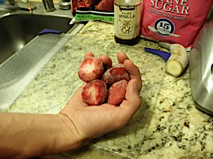
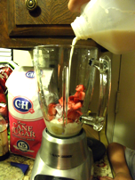
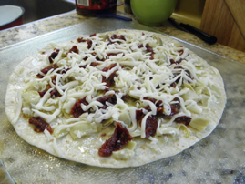

8-20-2012
Dipped Wine Bottle
If your anything like me, you probably have a few wine, champagne, or alcohol bottles going into the recycling each month. My husband and i just celebrated our two year wedding anniversary and we bought a bottle of champagne. The bottle itself was cool - it had already been treated so it had a matte black color, but adding a pop of gold made it functional as a gorgeous indoor or outdoor decoration. So instead of sending those bottles out, reuse them in your own home by following the easy steps below.

What You Will Need:
- Wine Bottle
- Acrylic Paint
- Painters Tape
- Disposable Cup
- Small Cup with Warm Soapy Water
- Q-tips
Directions:
Take your acrylic paint and pour it into your disposable cup. I filled the Solo cup about 1/4 of the way up.
Use the painters tape on the wine bottle to tape off where you want the paint to stop. Then take your bottle and place it into the disposable cup. Tilt the disposable cup to get the paint on all parts of the bottle you want covered. Pull the bottle out of the disposable cup and allow excess paint to drip off.

Once the paint has stopped dripping allow paint to partially dry. After about 15 minutes remove the painters tape. Use the warm soapy water and a q-tip to clean up the edges and remove paint from anywhere you do not want it to be. At this point if you do not like how it turned out you can wash the whole bottle with water to remove the paint and start over. Pour the excess paint from the cup back into the paint container.
Once the paint has fully dried you can use your bottle indoors or outdoors to add a touch of upcycled personality to your home! Enjoy, be inspired, and go out and create some upcycled beauty for your home!

Click Here for more great craft ideas!
8-19-2012
Strawberry and Banana Smoothie

This smoothie is delicious, refreshing, and makes an excellent breakfast or a healthy late night snack. Strawberries contain dietary fiber which helps regulate digestion, as well as elements which help to build strong bones. The bananas provide an energy boost for your body and mind. Whether you make this smoothie with milk or juice it's going to be a delicious and nutritious addition to your day!
Note: This recipe makes one serving.

Ingredients:
- Frozen Strawberries
- 1/2 of a Frozen Banana
- Fat-free Milk or Juice
- Sugar or Agave Syrup
- Vanilla Extract
.png)
Directions:
- Cut your frozen banana in half.
- Peel the half of the banana that will go into the smoothie, return the other half to the freezer.
- Chop the banana into pieces and place them into the blender.
- Take a large handful of frozen strawberries, slice them, and add them to the blender. 
- Using a small cereal spoon, add one large spoonful and one small spoonful of sugar or agave syrup into the blender.
- Add one capful of vanilla extract into the blender.
- Pour your milk into the blender until it is covering about 2/3 of the frozen fruit. 
- Use the smoothie setting on the blender and wait roughly 3 minutes while it blends. If it's not blending after a minute add a small amount of milk.
- Pour into a glass and Enjoy!

.png)

Check here for more great recipes!
8-16-2012
Artichoke Heart and Sun-dried Tomato Tortilla Pizza
This pizza makes the perfect midday snack, easy lunch, or party appetizer. With the healthy benefits of artichoke hearts, which are full of antioxidants and fiber, and sun-dried tomatoes, which contain vitamin C, antioxidants, and monounsaturated "good" fats, this pizza tastes great with or without extra toppings. It's rich, filling, and full of flavor!

Ingredients:
- Burrito Sized Flour Tortilla
- Extra Virgin Olive Oil
- 1/2 cup chopped Sun-dried Tomato
- 1/2 cup chopped Artichoke Heart
- 1/4 cup Mozarella Cheese (optional)

Directions:
- Preheat oven to 350 F.
- Drizzle tortilla lightly with olive oil. 
- Chop up the tomatoes and artichoke hearts, roughly 1/2 cup of each. You can chop more or less based on you're preference.
- Cover the tortilla with the chopped artichoke hearts and sun-dried tomatoes
- Sprinkle the mozzarella cheese lightly over the top.
- Place tortilla pizza on a pizza stone or cookie sheet.
- Bake for 10 - 12 minutes, checking periodically to make sure the edges aren't burning.
- Remove pizza from oven, allow to cool, and ENJOY!